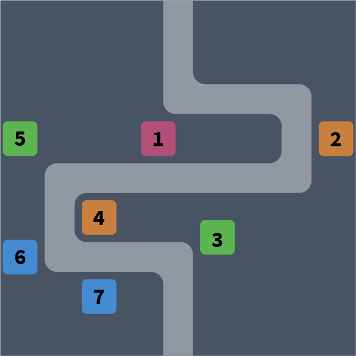

Passing Tower Defense Stages
If you are stuck in a Tower Defense stage, you can:
- Switch one of your leader hero to Harold
- Change unit and hero placements.
- Train more units and merge them until all units are at max level.
- Upgrade your heroes' Star levels or Exp levels.
- Upgrade your units's Unit Evolution level in the Barrack.
Heroes
While there are many Tower Defense heroes (e.g. Harold, Kris, and Ophelia), the only hero you really need is Harold.
In Tower Defense, heroes are either Melee or Ranged. Melee heroes (heroes carrying swords, clubs, or other physical weapons) can deal close-range AoE attacks. They should be placed at U-turns so that they can deal more damage. Range heroes (heroes carrying bows, magic staff, shuriken, or other range weapons) can deal single attacks with unlimited range. They should be placed as far back as possible.
Units
Archer can deal single attacks, and every attack is a crit attack (double damage). If you have difficulty dealing with a large invader, move Archer around to chase after the invader.
Fire Mage can deal AoE attacks (circle-shape) with some chance of critical AoE attacks (double damage to all units in range). Fire Mage is best used against a crowd of small invaders.
Ice Wizard can deal AoE attacks (line-shape) and can slow down some invader units. Ice Wizard is best used in conjunction with a melee hero.
Goblin can deal single attacks. After several attacks, Goblin release Poison which deals damage against to all invaders on the field. Goblin is best used in the beginning or middle section to increase their skill trigger rate.
Placements

On Tower 1, use Ice Wizard or a hero.
On Tower 2 and 5, use Melee Heroes.
On Tower 3 and 7, use Goblin and Fire Mage. When Frost Cyclops approach these towers, it will pause to freeze the tower units, and this pause gives your other units more time to deal damages.
On Tower 4 and 6, use Range Heroes or Archer.